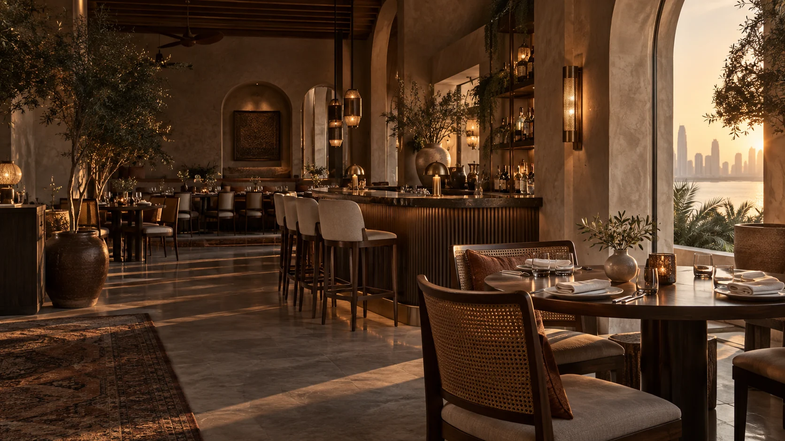
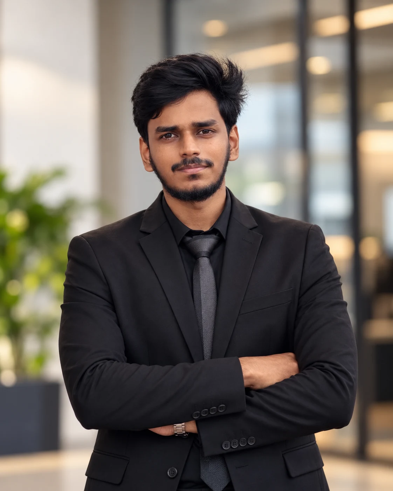
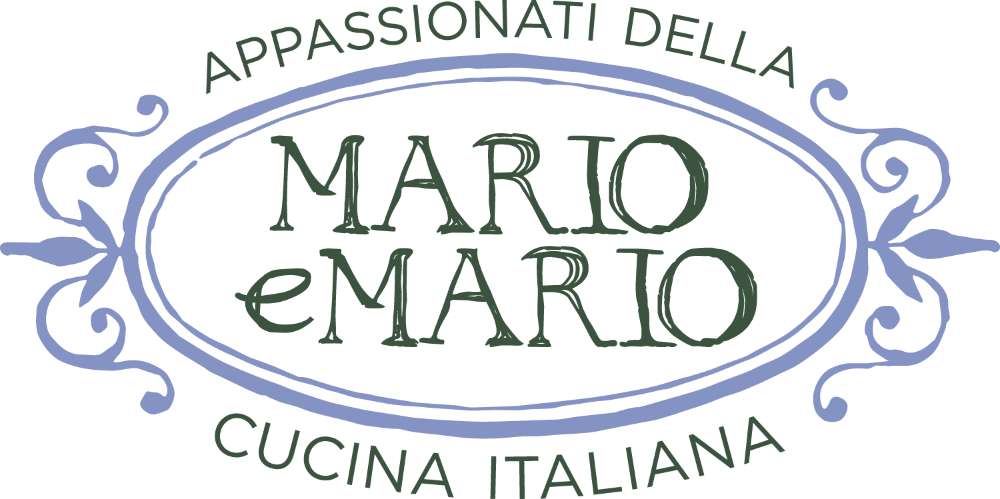

01
Brand & campaign
Visual identities, launch concepts, social campaigns and brand guidelines built to hold together across channels.

Hospitality & F&B designer · Doha, Qatar
I’m Mohamed Aashiq, a multidisciplinary designer creating memorable hospitality brands across campaigns, menus, packaging, motion and film.
Creative direction & design · Mohamed Aashiq

Based in Doha · Available for hospitality and creative opportunities
Meet the designer
The menu, the campaign, the way a dish moves on screen—every detail sets an expectation.
I bring more than six years of in-house, agency and freelance experience to hospitality and lifestyle brands. Today, I work as a Creative Designer at Al Sharqi Holdings in Lusail, creating print and digital work across a group of more than ten brands, including Infinity Hospitality.
My work combines brand thinking with hands-on delivery: Arabic and English artwork, image retouching, print production, motion, video and 3D. The goal is always the same—make the brand feel consistent wherever a guest meets it.
What I bring to the table
One creative partner across the guest journey—from a launch idea and visual identity to the everyday assets that keep the experience consistent.
Visual identities, launch concepts, social campaigns and brand guidelines built to hold together across channels.
Menu books, in-venue collateral, signage, packaging and print-ready artwork with a strong eye for production detail.
Social graphics, promotional reels, motion systems, video editing and colour work that bring the atmosphere to screen.
Retouching, product mock-ups, photography, 3D and AI-assisted concept visuals for faster, clearer creative decisions.
Selected hospitality work
Four focused projects spanning café campaigns, restaurant motion, food packaging and atmospheric video.
01 · Social campaign
A Lebanese morning,
told in three moments.
A launch series for a Lebanese café in Doha, shaped around a familiar morning ritual: open the shutters, turn the calendar page and unfold the paper.
My roleCampaign concept, art direction, visual composition and Arabic typesetting. An olive-and-cream palette, tactile paper and recurring floral details connect the series.
02 · Motion design
One restaurant identity.
Two moving promotions.

The restaurant’s existing stripes, crest and food imagery become a vertical content system with movement, pace and appetite appeal.
My roleMotion direction, composition, animation and timing across a brand-led reel and a pizza promotion.
Videos play muted. Use the sound button to listen.
03 · Packaging design
A flexible meal-plan system,
from sleeve to carry bag.
A coordinated packaging family for prepared meals. White, deep green and sage distinguish the plans while a consistent hierarchy makes every pack easy to navigate.
My rolePackaging system, layouts, colour variants and branded applications across meal sleeves, wrapping paper and takeaway bags.
The full order
The starburst pattern moves from sleeve to wrapping paper and bag, while the type system keeps every plan recognisable.
04 · Video editing
Food, service
and atmosphere.
A restaurant film that lets the small details register: pours, plates, warm interiors and the gestures of service.
My roleEditing, pacing and colour correction, bringing clarity and rhythm to the footage while retaining the warmth of the space.
Experience
2026—Now
Print and digital campaigns, profiles, signage and brand systems across more than ten group brands.
2023—2026
Menus, restaurant collateral, social and brand guidelines for hospitality and F&B clients in North America.
2022—2023
Menus, in-outlet collateral, campaigns and motion for food, beverage and entertainment brands.
A table for the next idea
Available for hospitality roles, freelance projects and creative collaborations in Doha and beyond.